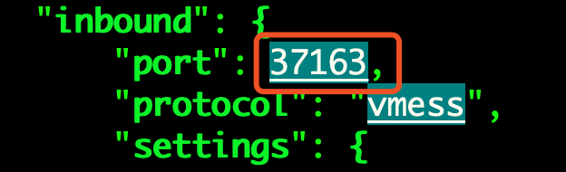
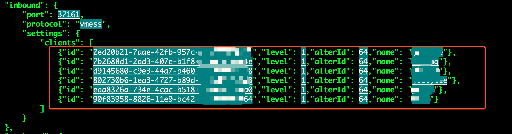
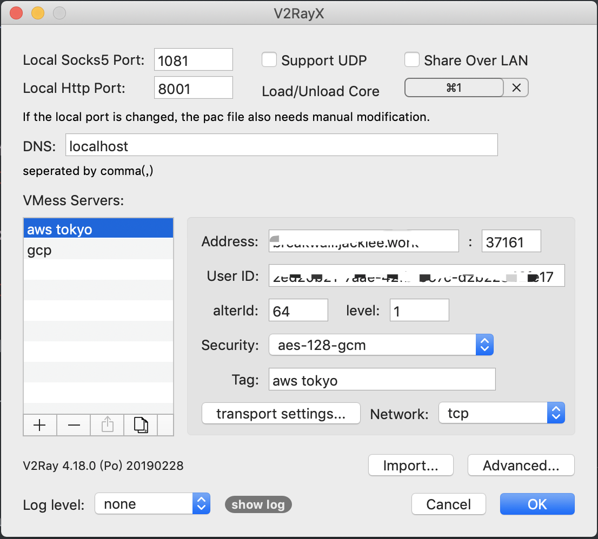

Set up the ladder
Install v[two]ray on linux server
1 | sudo su |
The script installs the following files.
/usr/bin/v[two]ray/v[two]ray: v[two]ray executable/usr/bin/v[two]ray/v[two]ctl: Utility/etc/v[two]ray/config.json: Config file/usr/bin/v[two]ray/geoip.dat: IP data file/usr/bin/v[two]ray/geosite.dat: domain data file
This script also configures v[two]ray to run as service, if systemd is available.
After installation, we will need to:
- Update
/etc/v[two]ray/config.jsonfile for your own scenario. - Run
service v[two]ray startcommand to start v[two]ray. - Optionally run
service v[two]ray start|stop|status|reload|restart|force-reloadto control v[two]ray service.
Configuration the v[two]ray
1 | sudo vi /etc/v[two]ray/config.json |
modify listening port

add client uuid

Each client user uses one line of configuration markup.
you can copy the following content and modiy your own uuid and name:
- {“id”: “xxxxxxx-xxxx-xxxx-xxxx-xxxxxxxxxxxx”,”level”: 1,”alterId”: 64,”name”: “xxxx”}
uuid can generate from uuid generator
use v[two]ray on mac osx
download
download from V2RayX
configuration
